広い場所でも狭い場所へ [梅吉]
未だ梅雨入りしない大阪。
多少蒸し暑くはありますがお天気もまずまずな日が続いております。
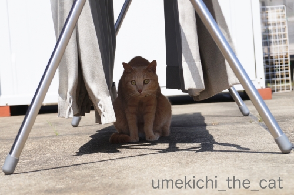
本格的にジメジメする前に大物のお洗濯に熱が入ります。
この日はリビングの大きなカーテン。
梅吉さんも積極参加ですよ＾＾
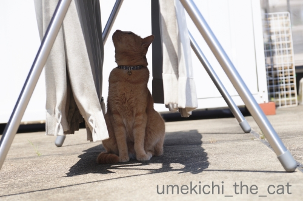
隠れ家？日よけ？
干したばかりのお洗濯物からはマイナスイオンが出てますか？
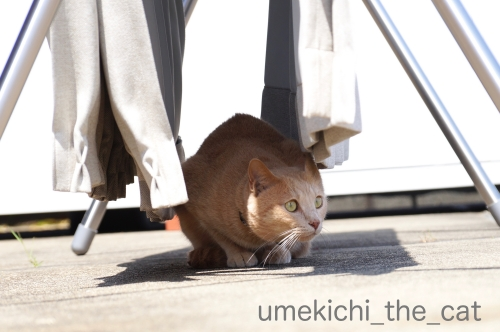
うちのベランダは電柱のてっぺんとほぼ同じ高さ。
電柱の金具の隙間にスズメが巣を作っているので
子育て真っ最中の親スズメが頻繁に行き交います。
それをガン見する梅吉さん。
ちょっと嫌な話・・・
このスズメの巣を狙ってカラスが来ます。
巣に嘴を突っ込んで子スズメを引っ張り出して自分＆子カラスのエサに。
カラスも生きるためのこと。
自然の摂理には口を挟むべきではないと思っているのでなるべく黙ってますが
つい「こらー」と言ってしまうことも。でもカラスは全然逃げませんよ(-_-メ)
梅吉が見てても全く動ぜずw
私も梅吉もカラスに馬鹿にされているのかも〜。
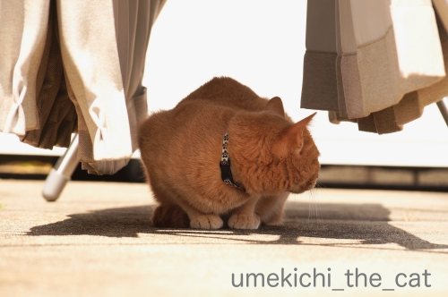
梅吉さんは襲われないから後ろは気にしなくて大丈夫ですよ。
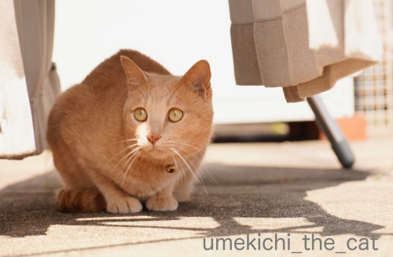
何かの下や隅っこが落ち着くのは私と一緒の様です(*>艸<)
お布団を干しても走ってきてこの位置でじっと周りを見ています。
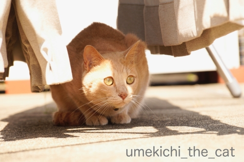
落ち着く場所で存分にお外を楽しんでくださいな＾＾
今使っているリビングのカーテン、買ってから初めて洗濯しました。汗、汗、汗(^_^;)
（何年経っているかは言わないでおこう・・・）
我が家のリビングの窓は通常サイズよりかなり大きいので当然カーテンも大きい。
洗濯機に入らないだろうな〜。頻繁に掃除機で埃を吸っているから大丈夫だよね〜。
クリーニングに出したら高そうだな〜。
などどグダグダ理由をつけていたのですが突然スイッチが入って洗濯槽に入れてみたら・・・
楽勝じゃない(〃▽〃)
以来晴れ間を見てはカーテンのお洗濯。
いや〜、気分的にもさっぱりして良い感じです♪
以前marimoさんから「カーテン、ニャンコの爪痕ついてませんか？」と
コメント返しをいただいたのですが・・・
レースのカーテンはどの部屋もひどいですw
もちろん下手人は梅吉。幼い頃はレースのカーテン登りをしたし。
洗濯するときは洗濯ネットを二重にして最弱モードで優しく洗って
傷口が広がらない様に気を使ってます(｡-_-｡)
買い換えてもまたすぐ同じ様になっちゃいそうだしー。
カーテン（本体？）の方は幸いにも無事なので助かってます＾＾
みなさんカーテンのお洗濯してますか？
 ↑ガブッと一押し↑
↑ガブッと一押し↑
多少蒸し暑くはありますがお天気もまずまずな日が続いております。
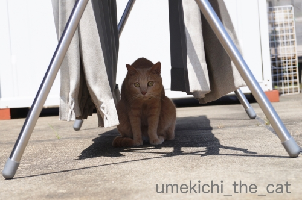
本格的にジメジメする前に大物のお洗濯に熱が入ります。
この日はリビングの大きなカーテン。
梅吉さんも積極参加ですよ＾＾
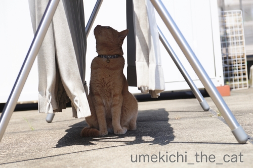
隠れ家？日よけ？
干したばかりのお洗濯物からはマイナスイオンが出てますか？
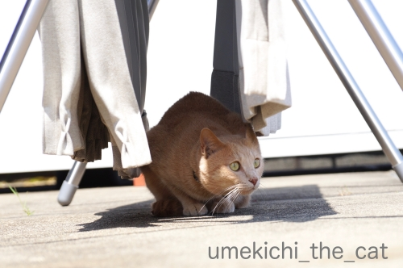
うちのベランダは電柱のてっぺんとほぼ同じ高さ。
電柱の金具の隙間にスズメが巣を作っているので
子育て真っ最中の親スズメが頻繁に行き交います。
それをガン見する梅吉さん。
ちょっと嫌な話・・・
このスズメの巣を狙ってカラスが来ます。
巣に嘴を突っ込んで子スズメを引っ張り出して自分＆子カラスのエサに。
カラスも生きるためのこと。
自然の摂理には口を挟むべきではないと思っているのでなるべく黙ってますが
つい「こらー」と言ってしまうことも。でもカラスは全然逃げませんよ(-_-メ)
梅吉が見てても全く動ぜずw
私も梅吉もカラスに馬鹿にされているのかも〜。
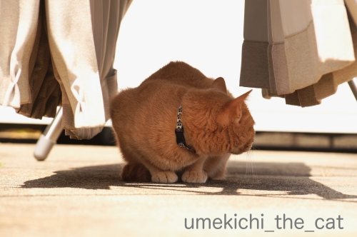
梅吉さんは襲われないから後ろは気にしなくて大丈夫ですよ。
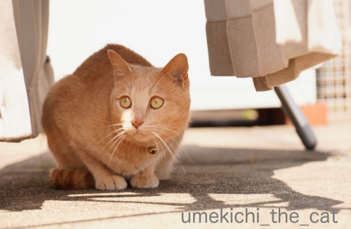
何かの下や隅っこが落ち着くのは私と一緒の様です(*>艸<)
お布団を干しても走ってきてこの位置でじっと周りを見ています。
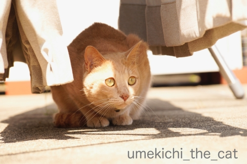
落ち着く場所で存分にお外を楽しんでくださいな＾＾
今使っているリビングのカーテン、買ってから初めて洗濯しました。汗、汗、汗(^_^;)
（何年経っているかは言わないでおこう・・・）
我が家のリビングの窓は通常サイズよりかなり大きいので当然カーテンも大きい。
洗濯機に入らないだろうな〜。頻繁に掃除機で埃を吸っているから大丈夫だよね〜。
クリーニングに出したら高そうだな〜。
などどグダグダ理由をつけていたのですが突然スイッチが入って洗濯槽に入れてみたら・・・
楽勝じゃない(〃▽〃)
以来晴れ間を見てはカーテンのお洗濯。
いや〜、気分的にもさっぱりして良い感じです♪
以前marimoさんから「カーテン、ニャンコの爪痕ついてませんか？」と
コメント返しをいただいたのですが・・・
レースのカーテンはどの部屋もひどいですw
もちろん下手人は梅吉。幼い頃はレースのカーテン登りをしたし。
洗濯するときは洗濯ネットを二重にして最弱モードで優しく洗って
傷口が広がらない様に気を使ってます(｡-_-｡)
買い換えてもまたすぐ同じ様になっちゃいそうだしー。
カーテン（本体？）の方は幸いにも無事なので助かってます＾＾
みなさんカーテンのお洗濯してますか？

カフェオレ色の梅吉

梅吉 2023年8月10日 永眠


梅吉と出会った譲渡会

犬猫の理由なき殺処分ゼロ
妄想広告
UMEKICHI 光

爆発的に早い！
時々攻撃的！
Thanks to Mr.Boss365
爆発的に早い！
時々攻撃的！
Thanks to Mr.Boss365

レースの方は洗ってますが厚手の方は⋯。
何年洗ってないんだろう。気になっちゃった。どうしよ〜。
by zombiekong (2019-06-13 00:55)
梅吉さん、うしろうしろ～(志村けんみたいに)（ﾟ□ﾟ）
カーテンの洗濯は、年に1～2回かなw
by 英ちゃん (2019-06-13 01:18)
去年さぼっちゃったな～、カーテンのお洗濯（＾＾；）
家中のを洗うと一度で済まないから
コインランドリーに持って行ったらいいかな～と検討中です
by 藤並 香衣 (2019-06-13 01:27)
長男君がカーテンで爪砥ぎする子だったので
我が家のカーテンはどれもボロボロです。
でも、長男君が居た証のような気がして替えられません＾＾；
by ぽちの輔 (2019-06-13 06:29)
滅多にしません(-_-;)
一応、洗濯OKのやつだけど、家で洗濯となると、天気が良くてすぐ乾く日にやりたいとか、いろいろ考えるとなかなかやる時がなくて。
カラスはねー、恐いですねー。仔猫とかあぶないですよ。
梅吉くんサイズなら大丈夫と思いますが。
by ChatBleu (2019-06-13 07:12)
カーテン洗いのスイッチが入るのは、
うちのかみさんは年に２回くらいかなぁ=(^.^)=
カーテンにはツメ跡にほつれ、網戸には虫が訪問しやすいよう
適切な大きさの穴w
おかげでもう３度カーテンを変えて、網戸も張り替え（かみさんがw）ました(ｰ ｰ;)
うちの出窓＆窓も規格外なので、カーテンお高いんですよねぇ(T ^ T)
by ニッキー (2019-06-13 07:20)
カーテン！！洗うの大変ですよねぇ～！
我が家の一番大きいカーテンだと
幅２メートル５０センチ以上
高さが２メートル９０センチあるので
干すのも大変です(;^_^A
スイッチが入らないと洗いません（笑
カラス怖いですよね・・・
以前、ご近所のヨークシャテリアが
散歩中に連れ去られようとしてました(>_<)
梅吉さんもお気を付けくださいね！
by きぃ (2019-06-13 07:39)
梅吉さん、良い感じで梅雨を楽しんでますね(^^)
by チャー (2019-06-13 07:49)
近所のお宅で、通勤途中にリビングのレースカーテンが見えますが、
下から30センチぐらいがズタズタのすだれ状態。
にゃんこではなく、下手人はワンコのようです(^_^;)
by よーちゃん (2019-06-13 08:44)
こんにちは。
梅吉君、日焼けしないベスポジ確保ですね。
「お洗濯物からはマイナスイオン」は出ていませんが・・・
マイナス気温にはなりそうです。広いルーフバルコニー快適そうです。
上からの攻撃を防御？屋根ある場所をニャンズは好みますね。
弱肉強食の世界ですが、頂点に立つちぃさんですから「こらー」は問題ナシです。
梅吉君、良い表情しています。なんか？癒されますね（笑）最高です。
小生宅でも洗濯機で洗っていますが、干すのが大変みたい？
薄手のレースは、カーテンレールに掛けて干します。室内で自然乾燥？
小生猫、カーテン類に登る事もなく爪痕もない感じです。
壁類、特にコーナー部を破壊されましたが、現在はしない感じです！？(=^･ｪ･^=)
by Boss365 (2019-06-13 10:08)
そう言えば、去年はしなかったような！
外すのが大変なんですよね（笑）
我が家、たぼ子を吸う人がいるわけでもないし、
子供が汚すわけでもないしと理由をつけては、
先延ばしです（笑）
カーテンは脱水の後、
そのままカーテンレールに吊して干しています。
梅吉さん、良い隠れ場所を見つけましたね。
カラス、気をつけてください。
カラスは顔を覚えて、執拗にイタズラをしに来ると読んだことがあります。
先日、久しぶりにカラスがいるそばを通りましたが、
大きいことあの嘴は凶器ですね。
by kiki (2019-06-13 11:16)
カーテンは本体もレースも年に1回、家の洗濯機で真夏に洗います！
こてつは何故かカーテンにはあまり執着せず、フックの方が気になるようで、手の届くところを時々外されてます(^▽^;)
おかげでソファーカバーやカーペットほどにはボロボロにはなっていません♪
スズメさん、切ないですね・・・。
手を出しちゃいけないのはわかっているけれど、見てしまうとやっぱり辛い。
公園で子猫が狙われていた時は、思わず手に持っていたジャンプ傘をズバッと開いてカラスを追っ払ってしまいました。この子に手を出さんでも食パン撒きに来るおっちゃんからもらっとき！と。
復讐されるかもしれませんね(≧▽≦)
by ゆきち (2019-06-13 12:22)
カーテン、半年に１回くらいは洗ってるかな。
面倒なので、洗ったあと、洗濯機から出してそのまま取り付けて自然乾燥(笑)
梅雨の晴れ間の今日、洗えば良かったねｗｗ
もっと早くちぃさんのブログを見れば良かったわ(笑)
by リュカ (2019-06-13 15:17)
カーテン洗濯しますよ～♪
うちも子供のころはNaoちゃんがよくよじ登っていました。
今は伸びた爪がささくれ立ってきたレースに引っかかりもがいています。
なので、ちょっとレースだけでも新しく買い換えようかしら？と思ったり。
先日はベランダに出て網戸でもがいていました。
昨日病院へ行く羽目になったので気をつけなくてはいけないなと思たのは、
爪をひっかけてもがいているうちに爪を傷つけてしまうのでしょう。
通常通り伸びていれば毎日の爪とぎで爪が肉球に刺さることもなかったはず。
ですが傷ついた爪は巻いてしまって研げなかったのでしょうと・・・というのが
動物病院のドクターの見解でした。
by marimo (2019-06-13 17:15)
カラスは人とかも全然怖がらないので、困っちゃいますね！
カーテンは年に2回ぐらい洗濯しますが、埃で汚れるみたいです。
梅吉さんはカーテン登りしちゃうのですね(^^)
by ma2ma2 (2019-06-13 17:32)
カーテン はて(｡･_･｡)
by (。・_・。)２ｋ (2019-06-13 17:38)
私は洗濯はもう何十年もしていません^^;
独身の頃は、よくしていました。
カーテンはボロボロです。
洗濯をしているのを見たことがないです＾＾
by riverwalk (2019-06-13 20:55)
レースはするけど、いわゆるカーテンは…
1度位しか…（汗）
by ふにゃいの (2019-06-13 21:49)
カラスは頭が良いみたいですね。
もうほとんど「空飛ぶ人間」と言っていいかも知れませんね。^^;
梅吉さんもちぃさんも襲ってこないことが分かっているのでしょうね。
カーテン、洗う前に買い換えちゃうかも、です。^^;;
by yes_hama (2019-06-13 21:58)
まだ梅雨入りしないんですね～。
雀の巣をガン見の梅吉さん、楽しそう＾＾
‥カラスは怖いですね。近くで見ると大きいし、くちばしが鋭いので、素手の人間のことなんか馬鹿にしてるかも。
カラスが増えてから小鳥はめっきり減りましたよ。
カーテン、厚いのを自分で洗ったらぼろっちくなったことがありました。知らないうちに猫が傷をつけていたのも一因だけど＾＾； ハタキや掃除機かけたりアルコールで拭いたりしてます＾＾
網戸はどこもぼろっちく、見慣れてしまってあまり意識しません＾＾；
by sana (2019-06-14 00:56)
梅雨入り、まだみたいですね(￣∇￣；
多少ジメっとしますが、朝晩は涼しく過ごしやすいです。
このくらいの気候がベストですね♪猛暑はイヤ！！
ベランダ、広くて大活躍ですね。梅ちゃんも気持ちよさそう♪
カーテンは年末に洗いました。レースのはやはりボロボロに
されたので、思い余って買い換えちゃいました＾＾
うちはカーテンよりソファーが被害を受けています(ﾉω･､)
叱ってもムダっぽく...( ;∀;)
by カトリーヌ (2019-06-14 11:06)
きなこが子猫の時カーテン登りでカーテンはボロボロ、かつコクシジウムで破棄処分。その後ナノの声があまりに大きくて外に漏れないよう遮音カーテン買いました。そうねそろそろ洗わなきゃね・・・カーテンの洗濯うちはそんな感じです(;^ω^)だって大変だもんね外して洗って干してまたつけて"(-""-)"
by palpal (2019-06-14 21:13)
カーテン、あまり洗ってませんね。
特に自室は完全自分管理なので、見渡すと凄いことになってます・・・。
今週、コインランドリーかな(^_^;)
by kou (2019-06-14 21:51)
いつも気持ち良さそうなベランダで羨ましいです！
我が家も縦横長いカーテンなので、洗濯機に入らない気がして・・・
そんなこんなで、引っ越してからまだ一度も洗っていません(｡-_-｡)
この時期西日がすごいので、我が家では秋限定イベントかも^^;
by Ja-Kou66 (2019-06-15 00:16)
カーテン年末にとってから、新しいカーテン買おうと？？？買わないで半年経過してしまいました。
by ニコニコファイト (2019-06-15 09:21)
こんにちは。
お忙しい中、すももの為にコメントありがとうです。
コットン・ぬるま湯・湿らせて・ぽんぽん・優しくですね。了解しました！！
すもも、爪が伸びた後ろ足で掻くので、傷が付く感じです。
ニキビではないと思いますが、掻くので、清潔でない可能性ありますね。
ちぃさん！！感謝です！？(=^･ｪ･^=)
by Boss365 (2019-06-15 11:42)
先日、つれの実家で、レースの方を洗いました。つれが。
「長男が来た時にヨメに頼む」、と言っていたのに、頼みづらかったそうで・・。
洗い終われば半乾きのまま、また吊るせばいいのですが、
大変らしく・・・。
by らしゅえいむ (2019-06-15 15:29)
zombiekongさん＞
ふふふ (=ΦwΦ=)
お洗濯は梅雨明けでも大丈夫ですから！
でも今度は暑〜い中カーテンの付け外しが大変というwww
英ちゃんさん＞
お、カーテンお洗濯マメにされているのですね・・・
見習わねば！
藤浪 香衣さん＞
最近のコインランドリーって綺麗なんですよね！
会員登録制でスマホかざして入り口を開けるとか。
高校生の頃部活の汚い洗濯物（自分のじゃない）を持っていった
昔のコインランドリーのイメージかなかったのでびっくりしました。
大容量のマシンがあるからたくさん洗って乾燥もできて良いですよね。
しか〜し、我が家には車がないという(⌒-⌒;
ぽちの輔さん＞
そのカーテンはぽちの輔さん家のにゃん歴史そのもの、ですね＾＾
ボロボロ、風通しが良くて夏は過ごしやすいとかw
ChatBleuさん＞
大物の洗濯はお天気と干すスペース問題があるので
タイミングをはかるのが難しいですよね。
やる気スイッチもあるしw
カラス、襲ってきたら梅吉が応戦しそうで怖いのよ。
きっと逃げないで飛びつくわ、梅吉は(-_-メ)
ニッキーさん＞
ゴッドマザー様、網戸の張替えまでやっちゃいますか！
素晴らしい〜。
我が家は最近おっとが網戸を張り替えてくれたので
虫さん訪問穴を塞ぐパッチがついたみすぼらしい網戸にサヨナラしました(´▽｀)
梅吉がまた穴を開けないように祈るのみですw
規格外カーテン、高いですよね！
うちは注文したのですが値段みてびっくりしました(⌒-⌒;
きぃさん＞
測ってないけどうちのカーテンもそのくらいの大きさです。
ということは当然窓も大きい・・・
大きい窓って重くてびっくりしませんでしたか？
扉の滑りの悪い（？）冬はますます重くなるので毎回きばって開けてますw
ヨークシャテリア、２〜３kgですよね。
梅吉は５kg近くあるので連れ去られることはないと思いますが
カラスのその生きてる動物連れ去ろうとする行動が怖いです=͟͟͞͞ ( ꒪౪꒪）
チャーさん＞
梅雨の晴れ間、有効に使ってます。
真夏は暑すぎてベランダに出られなくなるしw
よーちゃん＞
すだれカーテン、風通しがよろしいかもwww
イタズラは猫って思われがちですがわんこも相当ヤルんですよね。
知人の家はテーブルとか椅子の足が崩壊寸前でした(*>艸<)
Boss365さん＞
ルーフバルコニーのど真ん中でゴロンゴロンしてますが
基本は窓枠の近くとか植物の葉陰とか洗濯物の下とか
そんな場所でくつろいでいます＾＾
梅吉もいちおう野性は残っているのかしら(*>艸<)
カーテンは濡れたまま干すのがシワにもならないし一番良い方法なんですよね。
ただうちのカーテンは大きいので濡れた重い状態だと
カーテンレースが崩壊するかもなので
ある程度乾かしてからレールに掛けてます＾＾
すももちゃんおうちの家具に爪たてないなんて良い子ー！！
顎の傷、ひどくなりませんように。
kikiさん＞
そうそう！
カーテン洗濯の億劫な原因は付け外しなんですよね。
私は小柄なので脚立に乗っても爪先立ちで上を見続けなきゃいけないので
ふくらはぎは痛くなるわ頭はクラクラするわで大変ですw
カラスは「前にいたずらした人間に似た人」も襲うようですよ。
その執念深さと記憶力が怖いです。
以前黒い日傘差していたらカラスと思われたのか
傘を蹴飛ばしながら飛び回られたのでともて怖かったです =͟͟͞͞ ( ꒪౪꒪）
ゆきちさん＞
ゆきちさんはたしかアライグマさんだったような・・・
カーテンをスルーするわけないですよね(≧▽≦)
私もお洗濯は好きな家事なのですが
チビゆえカーテンの取り外しが億劫で(⌒-⌒; )
外す時はまだしも取り付けの時は首と頭が痛くなって
「血管切れるわっ」てなっちゃいますw
カラスは子猫も狙うんですね・・・
ジャンプ傘の開け閉めは有効、覚えておきます。
以前黒い日傘をさしていてカラスに襲われたことがあったので
傘では戦えないかと思ってました。
今度何かあったら開け閉め作戦で戦います (๑•̀ㅂ•́)و✧
リュカさん＞
カーテンのお洗濯はお天気と
自分のスイッチのタイミングが重要よね。
年末は忙しくて手が回らないし夏は暑すぎて
カーテンの付け外しするだけで汗だくになっちゃうしw
梅雨の晴れ間まだあるかな？
大阪は梅雨らしくない天気が続いているので
私まいまアライグマモードですwww
marimoさん＞
猫も巻き爪のになるのですね。
私も注意して梅吉の爪を見てなくっちゃ。
病院で猫の爪を切ってもらう方が多いですが
梅吉は病院だと大変お怒りになりそうでw
寝ぼけている好きに私がささっと切るのが一番みたい。
四つの足一度にきれなくて1日一足、なんてのがよくありますけど。
Naoさんの肉球早く良くなると良いですね＾＾
by ちぃ (2019-06-16 14:20)
あらあら最近のカラスは図々しいですね。
ちなみに家にいた猫は、ガラス越しにヒヨドリに脅かされ
20cmも飛び上がって、階段駆け下りて逃げていきました。
by caterham_7 (2019-06-16 14:56)
ma2ma2さん＞
私は小柄なのでカラスには子供だと思われているみたいで・・・(-_-メ)
カーテンちゃんとお洗濯されているのですね。
見習わなければ・・・
2kさん＞
2kさんの場合はどなたかがお洗濯されているので
自分は知らない、ですよねー(≧▽≦)
rriverwalkさん＞
もう何年も洗濯してない、はうちのおっとも同じです(⌒-⌒; )
ボロボロのカーテンは洗うと余計に傷口が広がるので
そのままでOKです！！
ちびちゃんの今後の活躍も予測できないですし(*>艸<)
ふにゃいのさん＞
ふふふ＾＾大物はそうですよねー！
私も次に洗濯するのは数年後かもしれません(*>艸<)
riverwalkさん＞
カラス、意地悪されると
「その人に似た人」にも悪意を持つ様ですよ。
私のこらーっ！程度じゃ相手にもされていない様な気もします(⌒-⌒;
「目障りなおばちゃんと猫やな」程度なんだろうなぁ・・・
カーテン、梅吉がもう少しおイタしなくなったら
買い替えも考えようかしら・・・・
しかーし、規格外カーテンってお高いのですよ(-_-メ)
sanaさん＞
カラスは本当に大きいですよね。
私や梅吉なんて簡単に撃退出来るとでも思っている様な態度w
必要以上にはあまり関わらない様にしています。
梅吉とバトルされても困りますし(⌒-⌒;
網戸もカーテンも気にしなければ良いんですよねー。
私も普段はあまり気にしてないんですが
ブログに使おうと写真を見て改めて無残な姿に
びっくりすることがあります(⌒-⌒;
カトリーヌさん＞
このまま梅雨入りなんてしないでほしい！
とも思いますが・・・
ちゃんと季節を経ないと困ることも出てくるので
ちゃっちゃと梅雨入りしてちゃっちゃと終わってや！と思ってますw
猛暑はねー、毎年夏と戦うって感じです(⌒-⌒;
うちのソファーもひどいですよw
もう「ランダムなフリンジのついた手作業ダメージ加工の一点物」です0(≧▽≦)0
爪とぎは「止めてよー」と力なく注意しますが一応言うだけでもう諦めてます。
ボロ隠しのマルチカバー必須www
by ちぃ (2019-06-16 16:23)
palpalさん＞
おおお！その流れでなんとなく何年洗ってないか推測できそうなw
ナノくん梅吉と同級生だしwww
カーテンの付け外し、私はチビなのでずーっと上むいていると
まじで頭の血管切れるんじゃないかと思う時があります(⌒-⌒;
kouさん＞
自室は自己管理、素晴らしいです！
まさに聖域ではないですか＾＾
凄いことになっていても
どこに何があるかはちゃんと把握されているのですよね？あれ・・・？
Ja-Kou66さん＞
規格外のカーテン、やっぱり洗うの億劫ですよねw
せっかく外しても洗濯機に入らなかったら無駄足だし。
コインランドリーに持っていくと言う方もいらっしゃって
その手があったか！と思いましたー＾＾
西日で乾かす、真夏だと速乾！って感じがします(*>艸<)
ニコニコファイトさん＞
洗うとか洗わないとかの前にカーテンが無いと！
潔いですwww
らしゅえいむさん＞
確かに、カーテンの付け外しが結構な重労働なので
ためらう方も多いかもしれませんね。
お家のことはやっぱり実の娘の方が頼みやすい、それはわかるかも！！
caterham_7さん＞
カラスも都会ズレしてるんでしょうかw
私がこらっ！といても「あんたなにいってんねん」と言う感じで
じっと顔見られて終わりです。
ベランダに来る鳩もなんですよ(⌒-⌒;
ガラス越しにヒヨドリ、いきなり脅かされたらビックリかもー。
梅吉の場合は20㎝窓ガラスに向かって跳びつきそうです(⌒-⌒;
by ちぃ (2019-06-16 17:24)